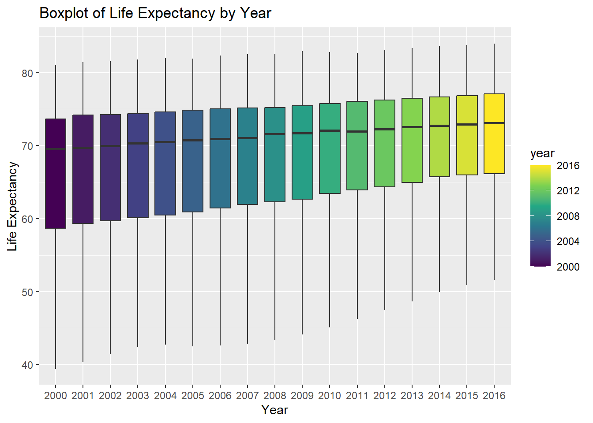
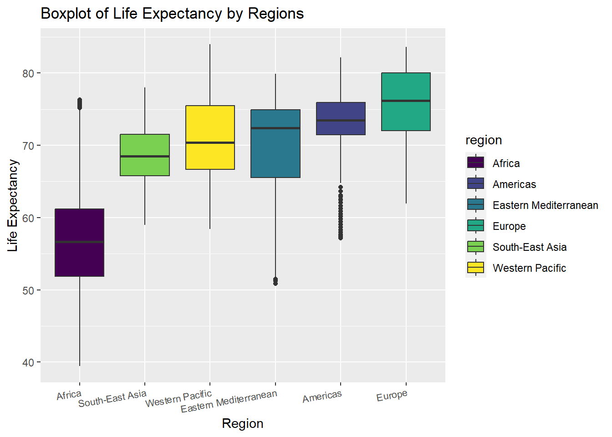

library(tidyverse)
options(
ggplot2.continuous.colour = "viridis",
ggplot2.continuous.fill = "viridis"
)
scale_colour_discrete = scale_colour_viridis_d
scale_fill_discrete = scale_fill_viridis_d
data = read_csv("./data/Imputed_expectation.csv")
1. Life Expectancy by Year (2000 - 2016)
data %>%
janitor::clean_names() %>%
group_by(year) %>%
summarise(avg_by_year = mean(life_expect,na.rm = T)) %>%
arrange(avg_by_year) %>%
knitr::kable(digits = 3)
| 2000 |
66.381 |
| 2001 |
66.760 |
| 2002 |
66.981 |
| 2003 |
67.195 |
| 2004 |
67.536 |
| 2005 |
67.918 |
| 2006 |
68.383 |
| 2007 |
68.817 |
| 2008 |
69.228 |
| 2009 |
69.680 |
| 2010 |
69.912 |
| 2011 |
70.458 |
| 2012 |
70.722 |
| 2013 |
71.026 |
| 2014 |
71.225 |
| 2015 |
71.477 |
| 2016 |
71.788 |
data %>%
janitor::clean_names() %>%
group_by(year) %>%
ggplot(aes(x = factor(year),y = life_expect,fill = year)) +
geom_boxplot() +
labs(title = "Boxplot of Life Expectancy by Year") +
xlab("Year") +
ylab("Life Expectancy")

2. Life Expectation by Regions
data %>%
janitor::clean_names() %>%
group_by(region) %>%
summarise(avg_by_region = mean(life_expect,na.rm = T)) %>%
arrange(avg_by_region) %>%
knitr::kable(digits = 3)
| Africa |
57.679 |
| South-East Asia |
68.667 |
| Eastern Mediterranean |
69.742 |
| Western Pacific |
72.233 |
| Americas |
73.205 |
| Europe |
75.805 |
data %>%
janitor::clean_names() %>%
group_by(region) %>%
ggplot(aes(x = fct_reorder(region,life_expect), y = life_expect, fill = region)) +
geom_boxplot() +
labs(title = "Boxplot of Life Expectancy by Regions") +
xlab("Region") +
ylab("Life Expectancy") +
theme(axis.text.x = element_text(hjust = 1, angle = 10,size = 8))

test of equal variance
bartlett.test(life_expect ~ factor(region),data = data) %>%
broom::tidy() %>%
knitr::kable()
| 260.0896 |
0 |
5 |
Bartlett test of homogeneity of variances |
3. t.test : Compare Mean Life Expectancy Between Americas and
Europe
extract life expectancy in Americas and Europe
Americas <- data %>%
janitor::clean_names() %>%
filter(region == "Americas") %>%
pull(life_expect)
Europe <- data %>%
janitor::clean_names() %>%
filter(region == "Europe") %>%
pull(life_expect)
test equal variance
var.test(Americas,Europe,alternative = "two.sided",conf.level = 0.95) %>%
broom::tidy() %>%
knitr::kable()
## Multiple parameters; naming those columns num.df, den.df
| 0.7875423 |
560 |
849 |
0.7875423 |
0.0021595 |
0.6779526 |
0.9170183 |
F test to compare two variances |
two.sided |
t.test with unknown unequal variances
t.test(Americas,Europe,alternative = "less",conf.level = 0.95,paired = F,var.equal = FALSE ) %>%
broom::tidy() %>%
knitr::kable()
| -2.599997 |
73.20526 |
75.80526 |
-10.61033 |
0 |
1292.953 |
-Inf |
-2.196646 |
Welch Two Sample t-test |
less |
4. prop.test : Compare the Proportion of Life Expectancy Over 70
Between Western Pacific and Eastern Mediterranean
data %>%
janitor::clean_names() %>%
filter(region == "Western Pacific") %>%
summarise(above_70 = sum(life_expect > 70),
total = n()) %>%
knitr::kable()
data %>%
janitor::clean_names() %>%
filter(region == "Eastern Mediterranean") %>%
summarise(above_70 = sum(life_expect > 70),
total = n()) %>%
knitr::kable()
prop.test(c(203,225),n = c(357,357),correct = F) %>%
broom::tidy() %>%
knitr::kable()
| 0.5686275 |
0.6302521 |
2.823149 |
0.092914 |
1 |
-0.133367 |
0.0101177 |
2-sample test for equality of proportions without
continuity correction |
two.sided |
5. Average Life Expectancy by (region, year) Combination
data %>%
janitor::clean_names() %>%
group_by(region,year) %>%
summarise(avg_by_year_region = mean(life_expect,na.rm = T)) %>%
pivot_wider(
names_from = region,
values_from = avg_by_year_region
) %>%
knitr::kable(digits = 3)
## `summarise()` has grouped output by 'region'. You can override using the
## `.groups` argument.
| 2000 |
52.999 |
71.443 |
68.021 |
73.740 |
65.012 |
69.934 |
| 2001 |
53.505 |
71.615 |
68.292 |
74.126 |
65.731 |
70.265 |
| 2002 |
53.741 |
71.914 |
68.540 |
74.205 |
66.258 |
70.485 |
| 2003 |
54.034 |
72.026 |
68.510 |
74.379 |
66.797 |
70.847 |
| 2004 |
54.573 |
72.253 |
68.823 |
74.767 |
66.522 |
71.167 |
| 2005 |
55.265 |
72.580 |
69.075 |
74.801 |
67.767 |
71.447 |
| 2006 |
56.069 |
72.943 |
69.221 |
75.208 |
68.162 |
71.802 |
| 2007 |
56.929 |
73.228 |
69.579 |
75.442 |
68.535 |
72.105 |
| 2008 |
57.765 |
73.444 |
69.974 |
75.796 |
68.246 |
72.392 |
| 2009 |
58.569 |
73.688 |
70.303 |
76.122 |
69.103 |
72.588 |
| 2010 |
59.340 |
72.925 |
70.572 |
76.341 |
69.756 |
72.954 |
| 2011 |
60.035 |
74.045 |
70.662 |
76.731 |
70.142 |
73.175 |
| 2012 |
60.625 |
74.142 |
70.619 |
76.923 |
70.494 |
73.405 |
| 2013 |
61.119 |
74.324 |
70.699 |
77.266 |
70.792 |
73.607 |
| 2014 |
61.446 |
74.478 |
70.643 |
77.488 |
71.085 |
73.747 |
| 2015 |
62.009 |
74.640 |
70.927 |
77.536 |
71.301 |
73.911 |
| 2016 |
62.526 |
74.801 |
71.150 |
77.819 |
71.644 |
74.134 |
6. Life Expectancy by Income Level
data %>%
janitor::clean_names() %>%
filter(!is.na(income_group)) %>%
group_by(income_group) %>%
summarise(avg_by_income = mean(life_expect,na.rm = T)) %>%
arrange(avg_by_income) %>%
knitr::kable(digits = 3)
| Low income |
57.028 |
| Lower middle income |
65.102 |
| Upper middle income |
70.984 |
| High income |
77.851 |
data %>%
janitor::clean_names() %>%
filter(!is.na(income_group)) %>%
group_by(income_group) %>%
ggplot(aes(x = fct_reorder(income_group,life_expect), y = life_expect,fill = income_group)) +
geom_boxplot() +
labs(title = "Boxplot of Life Expectancy by Income Groups") +
xlab("Income Groups") +
ylab("Life Expectancy")

7. Life Expectancy by Development Status
data %>%
janitor::clean_names() %>%
group_by(developed_developing_countries) %>%
summarise(avg_by_dev = mean(life_expect,na.rm = T)) %>%
knitr::kable(digits = 3)
| Developed |
77.500 |
| Developing |
66.341 |
data %>%
janitor::clean_names() %>%
group_by(developed_developing_countries) %>%
ggplot(aes(x = developed_developing_countries, y = life_expect,fill = developed_developing_countries)) +
geom_boxplot() +
labs(title = "Boxplot of Life Expectancy by Development Status") +
xlab("Development Status") +
ylab("Life Expectancy")

8. t.test : Comapre Mean Life Expectancy Between Developed and
Developing Countries
extract developed and developing life expectancy
developing <- data %>%
janitor::clean_names() %>%
filter(developed_developing_countries == "Developing") %>%
pull(life_expect)
developed <- data %>%
janitor::clean_names() %>%
filter(developed_developing_countries == "Developed") %>%
pull(life_expect)
test equal variance
var.test(developing,developed,alternative = "two.sided",conf.level = 0.95) %>%
broom::tidy() %>%
knitr::kable()
## Multiple parameters; naming those columns num.df, den.df
| 4.43623 |
2328 |
781 |
4.43623 |
0 |
3.948999 |
4.967078 |
F test to compare two variances |
two.sided |
t.test with unknown unequal variances
t.test(developing,developed,alternative = "less",conf.level = 0.95,paired = F,var.equal = FALSE ) %>%
broom::tidy() %>%
knitr::kable()
| -11.15886 |
66.34143 |
77.50028 |
-48.28952 |
0 |
2774.964 |
-Inf |
-10.77863 |
Welch Two Sample t-test |
less |